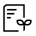

지향점
Health & Wellness, 첨단소재 중심의 스페셜티 소재 사업자
ESG 사업 포트폴리오 강화
식품
Sugar Reduction /
Bionutrients 사업 확대
화학
친환경 소재 사업 강화
모빌리티 & 에너지 소재 사업 기반 구축
패키징
폐플라스틱 재활용 사업 고도화
바이오
MD / 의약 사업 확대 및 신약사업 추진
ESG 경영시스템 고도화
식품
Sugar Reduction /
Bionutrients 사업 확대
E
2050년 탄소 중립을 목표로 단계적 감축 추진
순환경제 (용수 / 폐기물) 선도 입지 강화
S
고객의 건강과 안전을 고려하는 제품 확대
안전보건, 인권, 공급망 등 사회적 책임 강화
G
기업 지배구조 개선 및 윤리경영 체계 고도화
ESG 관리체계 및 거버넌스 고도화
ESG 경영시스템 고도화
ESG 추진 로드맵
그룹 ESG 비전 선포 (탄소중립 선언 포함)
지속가능경영보고서 발간
ESG 외부 평가 개선 추진
ESG 요소를 반영한 그룹 경영성과평가 (KPI) 도입
글로벌 ESG 이니셔티브 참여 본격화
ESG 중심 Business Model 혁신 추진
ESG 신규 성장동력 발굴
ESG 정보 관리 시스템 구축
그룹 내 ESG Fully 내재화
ESG 중심 조직 문화 정착
전 계열사 글로벌 수준의 ESG 외부 평가 등급 확보
글로벌 Standard ESG 리스크 관리 체계 완비
그룹 ESG 비전 / 목표 / 전략 방향 수립
탄소 중립 대응 및 순환경제 실현 방안 수립
ESG 경영시스템 구축 방안 수립
외부 평가 / 이해관계자 대응 방안 수립

지속가능경영보고서
삼양은 회사의 지속가능경영 추진 방향과 성과를 이해관계자들에게
투명하게 공개하고,
활발히 소통하기 위하여
지속가능경영보고서를 발행하고 있습니다.